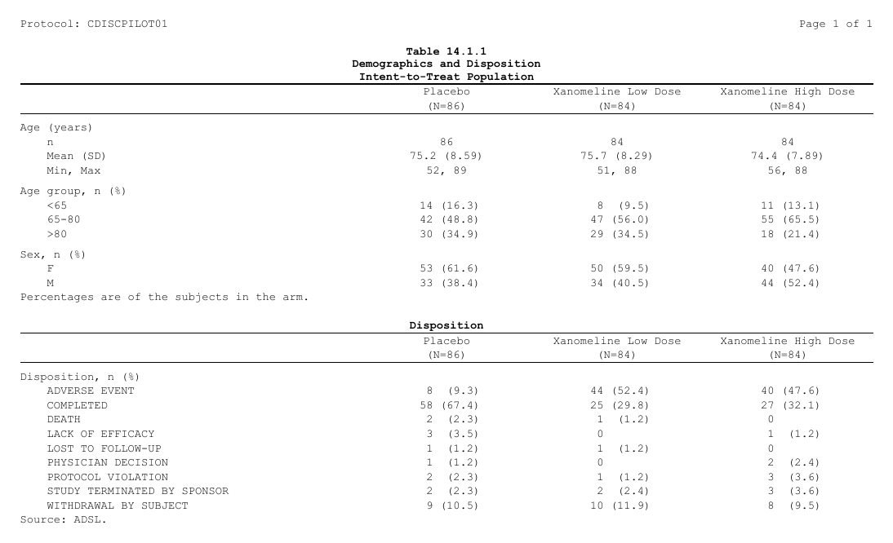
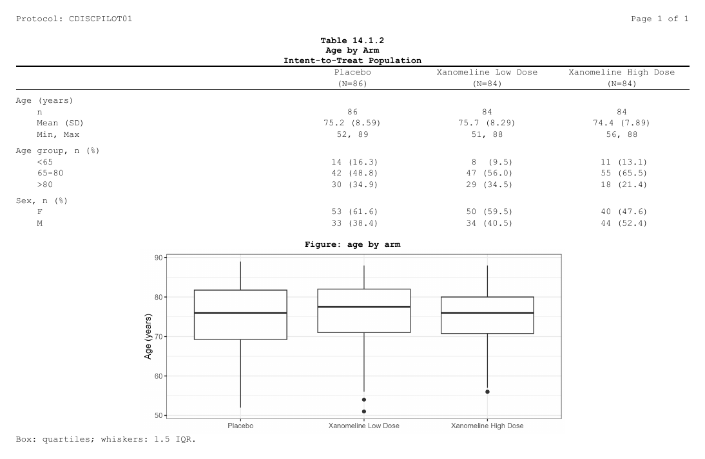
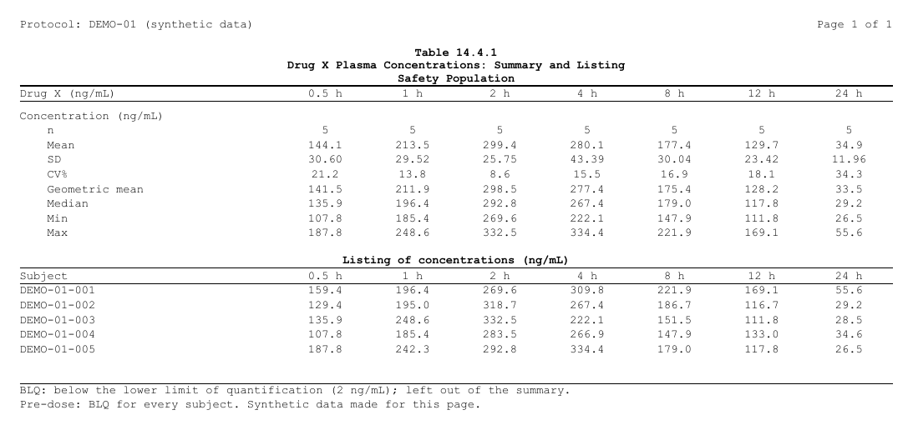
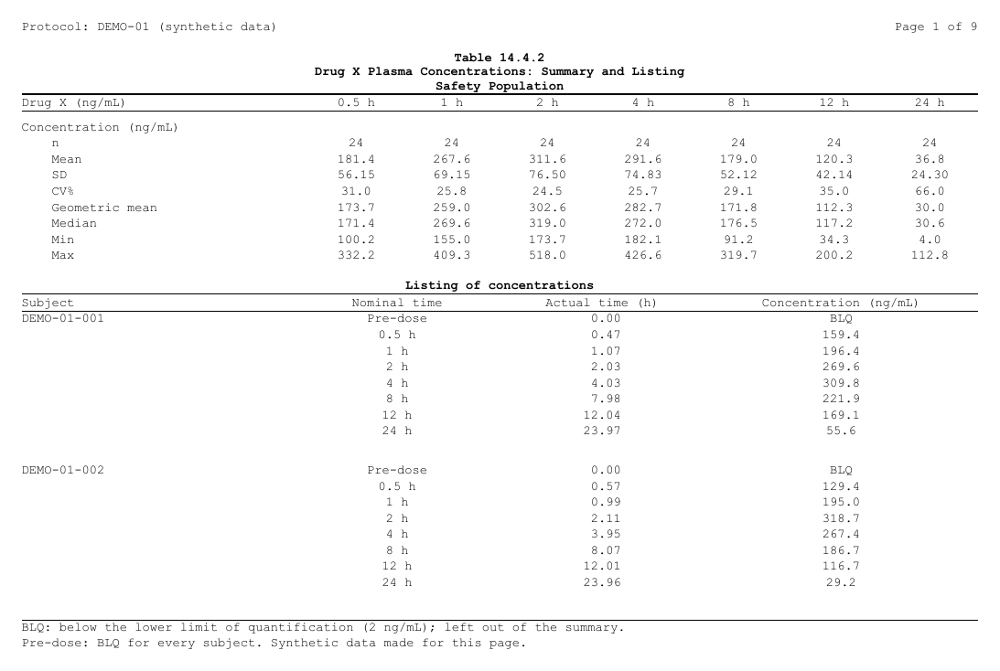
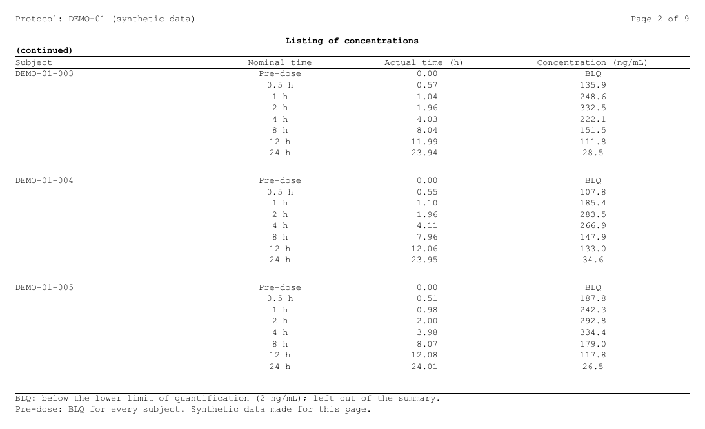
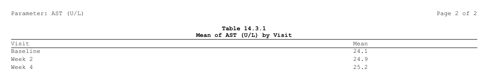

A report often puts two contents on one page: a summary table and the
listing behind it, a table and its figure, two short tables. In
rtfreporter each rtf_tables() or rtf_figures()
call adds a content, and page_break = FALSE puts it under
the content before it instead of on a new page. This page shows four
such reports and the rules behind them.
The arguments
| Argument | Of | What it does |
|---|---|---|
page_break |
rtf_tables(), rtf_figures()
|
TRUE (the default): the content starts a page.
FALSE: it goes on under the content before it. |
space_before |
both | With page_break = FALSE, the empty lines between the
two. |
titles, footnotes
|
both | The content’s own title block (above it) and footnote block (under it). |
first_rows |
rtf_tables() |
With page_break = FALSE, the rows of the table that go
on the shared page. The rest is paginated as the table says (a plan’s
plan_paginate_rows()), each page with its title, column
header and footnote. |
cont_title |
rtf_tables() |
With first_rows, a line under the title of each later
page, such as "(continued)". |
The header and footer of the page
(rtf_section(header = , footer = )) are the page’s, not a
content’s: they print on every page whatever is on it.
Fitting the page is the program’s job. rtfreporter
does not measure the page. A content that does not fit is carried to the
next page by the reader (Word, LibreOffice), with no title, column
header or footnote there, and the page numbers written into the file
({PAGE} / {TOTAL_PAGES}) are then off. Count
what fits: make the first content short enough, give a figure its
height, and give a long table first_rows.
rtf_layout(), at the end of this page, shows the pages as
rtfreporter will write them.
(a) A table under a table
Two summaries of one population, each from its own ARD and plan: demographics, and the subjects’ disposition.
Show code
adsl <- cards::ADSL
adsl$ARM <- factor(adsl$ARM, levels = c("Placebo", "Xanomeline Low Dose",
"Xanomeline High Dose"))
ard_dm <- cards::ard_stack(
adsl, .by = ARM,
cards::ard_summary(variables = AGE),
cards::ard_tabulate(variables = c(AGEGR1, SEX)))
ard_ds <- cards::ard_stack(
adsl, .by = ARM,
cards::ard_tabulate(variables = DCDECOD))
# the column header both tables share: the arm and its N
arm_header <- rtf_col_header(c("", "{col}"), c("", "(N={n})"))
dm <- ard_dm |>
normalize_ard() |>
table_plan(cols = "ARM", rows = c(group = "variable")) |>
plan_cells(continuous = c("n" = "{N:.0f}", "Mean (SD)" = "{mean:.1f} ({sd:.2f})",
"Min, Max" = "{min:.0f}, {max:.0f}"),
categorical = "{n:.0f} ({p:.1f%})", notes = FALSE) |>
plan_labels(c(AGE = "Age (years)", AGEGR1 = "Age group, n (%)", SEX = "Sex, n (%)")) |>
plan_levels(AGEGR1 = c("<65", "65-80", ">80"), SEX = c("F", "M")) |>
plan_col_header(values = list(n = TRUE), arm_header) |>
plan_stub(name = "row_label") |>
plan_columns(widths = c(4, 2, 2, 2)) |>
plan_style(border = "tfl", align_count_pct = TRUE)
ds <- ard_ds |>
normalize_ard() |>
table_plan(cols = "ARM", rows = c(group = "variable")) |>
plan_cells(categorical = "{n:.0f} ({p:.1f%})", notes = FALSE) |>
plan_labels(c(DCDECOD = "Disposition, n (%)")) |>
plan_col_header(values = list(n = TRUE), arm_header) |>
plan_stub(name = "row_label") |>
plan_columns(widths = c(4, 2, 2, 2)) |>
plan_style(border = "tfl", align_count_pct = TRUE)The first rtf_tables() starts the page; the second, with
page_break = FALSE, goes on under it, one empty line
between them:
Show code
header <- rtf_header(list(c(l = "Protocol: CDISCPILOT01", r = "Page {PAGE} of {TOTAL_PAGES}")))
doc_a <- rtf_document() |>
rtf_section(header = header) |>
rtf_tables(dm, titles = list(c("Table 14.1.1",
"Demographics and Disposition",
"Intent-to-Treat Population")),
footnotes = list("Percentages are of the subjects in the arm.")) |>
rtf_tables(ds, page_break = FALSE, space_before = 1L,
titles = list("Disposition"),
footnotes = list("Source: ADSL."))
generate_rtfreport(doc_a, "a_table_table.rtf", overwrite = TRUE)
Each table keeps its own title and footnote. The output’s own title (the table number, its name and the population) is the first content’s title block; a footnote for the whole output is the last content’s footnote block, or the page footer when it is wanted on every page.
(b) A figure under a table
rtf_figures() takes the same page_break and
space_before. Give the figure the height that is left on
the page:
Show code
library(ggplot2)
age_plot <- ggplot(adsl, aes(ARM, AGE)) +
geom_boxplot() +
labs(x = NULL, y = "Age (years)") +
theme_bw(base_size = 9)
doc_b <- rtf_document() |>
rtf_section(header = header) |>
rtf_tables(dm, titles = list(c("Table 14.1.2", "Age by Arm",
"Intent-to-Treat Population"))) |>
rtf_figures(age_plot, page_break = FALSE, space_before = 1L,
render_width = 6, render_height = 2.6,
titles = list("Figure: age by arm"),
footnotes = list("Box: quartiles; whiskers: 1.5 IQR."))
generate_rtfreport(doc_b, "b_table_figure.rtf", overwrite = TRUE)
(c) A PK summary and its listing
A concentration summary by time point, and under it the listing of the same concentrations, both with the time points across: the summary’s rows are its statistics, the listing’s its subjects. The data is made up here: 24 subjects, 8 nominal times, a one-compartment curve with some noise, BLQ under 2 ng/mL. This example takes five of the subjects: with the time points across, the summary and the listing fit on one page. (d) takes all 24.
Show code
set.seed(20261028)
n_subj <- 24
tpt <- data.frame(ATPTN = c(0, 0.5, 1, 2, 4, 8, 12, 24),
ATPT = c("Pre-dose", "0.5 h", "1 h", "2 h", "4 h", "8 h", "12 h", "24 h"))
subj <- data.frame(USUBJID = sprintf("DEMO-01-%03d", seq_len(n_subj)),
ka = stats::rlnorm(n_subj, log(1.2), 0.25),
ke = stats::rlnorm(n_subj, log(0.12), 0.25),
dose = stats::rlnorm(n_subj, log(400), 0.20))
adpc <- merge(subj, tpt, by = NULL)
adpc <- adpc[order(adpc$USUBJID, adpc$ATPTN), ]
conc <- with(adpc, dose * ka / (ka - ke) * (exp(-ke * ATPTN) - exp(-ka * ATPTN)))
conc <- conc * stats::rlnorm(nrow(adpc), 0, 0.12)
adpc$ARELTM <- round(pmax(0, adpc$ATPTN +
ifelse(adpc$ATPTN == 0, -0.1, stats::runif(nrow(adpc), -0.08, 0.12))), 2)
blq <- adpc$ATPTN == 0 | conc < 2
adpc$AVAL <- ifelse(blq, NA_real_, round(conc, 1))
adpc$AVALC <- ifelse(blq, "BLQ", format(round(conc, 1), nsmall = 1, trim = TRUE))
adpc$ATPT <- factor(adpc$ATPT, levels = tpt$ATPT)The summary is an ARD by time point, the time points across. BLQ samples are left out, and pre-dose (BLQ for every subject) has no column. One function makes the plan, so (d) can use it for all 24 subjects:
Show code
cv <- function(x) 100 * stats::sd(x) / mean(x)
gm <- function(x) exp(mean(log(x)))
pk_summary_plan <- function(data, cells) {
ard <- cards::ard_summary(
droplevels(data[!is.na(data$AVAL), ]), by = ATPT, variables = AVAL,
statistic = ~ list(N = length, mean = mean, sd = stats::sd, cv = cv,
geo_mean = gm, median = stats::median, min = min, max = max))
ard |>
normalize_ard() |>
table_plan(cols = "ATPT", rows = c(group = "variable")) |>
plan_cells(continuous = cells, notes = FALSE) |>
plan_labels(c(AVAL = "Concentration (ng/mL)")) |>
plan_levels(ATPT = tpt$ATPT[-1]) |>
plan_col_header(rtf_col_header(c("Drug X (ng/mL)", "{col}"))) |>
plan_stub(name = "row_label") |>
plan_columns(widths = c(3, rep(1, nrow(tpt) - 1))) |>
plan_style(border = "tfl")
}
pk_cells <- c("n" = "{N:.0f}", "Mean" = "{mean:.1f}", "SD" = "{sd:.2f}",
"CV%" = "{cv:.1f}", "Geometric mean" = "{geo_mean:.1f}",
"Median" = "{median:.1f}", "Min" = "{min:.1f}", "Max" = "{max:.1f}")
pk5 <- adpc[adpc$USUBJID %in% unique(adpc$USUBJID)[1:5], ]
summary5 <- pk_summary_plan(pk5, pk_cells)The listing is laid out as the summary: a row a subject, a column a
time point, the concentration in each cell (BLQ where it is
below the limit). It is a plain data frame, its column names the header,
with the summary’s column widths so the two line up:
Show code
post <- pk5[pk5$ATPT != "Pre-dose", ]
listing5 <- data.frame(Subject = unique(post$USUBJID))
for (t in tpt$ATPT[-1]) {
at <- post[post$ATPT == t, ]
listing5[[t]] <- at$AVALC[match(listing5$Subject, at$USUBJID)]
}
listing5_plan <- table_plan(listing5) |>
plan_columns(widths = c(3, rep(1, nrow(tpt) - 1))) |>
plan_style(border = "tfl")
listing5#> Subject 0.5 h 1 h 2 h 4 h 8 h 12 h 24 h
#> 1 DEMO-01-001 159.4 196.4 269.6 309.8 221.9 169.1 55.6
#> 2 DEMO-01-002 129.4 195.0 318.7 267.4 186.7 116.7 29.2
#> 3 DEMO-01-003 135.9 248.6 332.5 222.1 151.5 111.8 28.5
#> 4 DEMO-01-004 107.8 185.4 283.5 266.9 147.9 133.0 34.6
#> 5 DEMO-01-005 187.8 242.3 292.8 334.4 179.0 117.8 26.5The summary starts the page and carries the output’s title; the listing goes on under it:
Show code
pk_header <- rtf_header(list(
c(l = "Protocol: {STUDY} (synthetic data)", r = "Page {PAGE} of {TOTAL_PAGES}")))
pk_footer <- rtf_footer(list(
c(l = "BLQ: below the lower limit of quantification (2 ng/mL); left out of the summary."),
c(l = "Pre-dose: BLQ for every subject. Synthetic data made for this page.")))
doc_c <- rtf_document(tokens = list(STUDY = "DEMO-01")) |>
rtf_section(header = pk_header, footer = pk_footer) |>
rtf_tables(summary5,
titles = list(c("Table 14.4.1",
"Drug X Plasma Concentrations: Summary and Listing",
"Safety Population"))) |>
rtf_tables(listing5_plan, page_break = FALSE, space_before = 1L,
titles = list("Listing of concentrations (ng/mL)"))
generate_rtfreport(doc_c, "c_pk.rtf", overwrite = TRUE)
(d) A long listing that goes on
With all 24 subjects, the listing is longer than what is left under
the summary. Here it has one row a sample, so it is written as a plain
table: the columns as they print, named as their headers.
plan_row_group() prints the subject on its first row only
(and again at the top of a page), plan_blanks() puts a
blank row between subjects, and plan_paginate_rows() makes
pages of 24 rows (three subjects) without cutting a subject:
Show code
pk_summary <- pk_summary_plan(adpc, pk_cells)
lst <- data.frame(Subject = adpc$USUBJID,
`Nominal time` = as.character(adpc$ATPT),
`Actual time (h)` = format(adpc$ARELTM, nsmall = 2),
`Concentration (ng/mL)` = adpc$AVALC,
check.names = FALSE)
pk_listing <- table_plan(lst) |>
plan_row_group(mode = "value", collapse = "Subject", group_col = "Subject") |>
plan_blanks(where = "between_groups") |>
plan_paginate_rows(max_rows = 24, split = "group_safe") |>
plan_columns(widths = c(2, 1.5, 1.5, 2)) |>
plan_style(border = "tfl")(plan_listing() and listing_spec() are for
listings whose records wrap over several lines, such as adverse events;
they put a blank row after every record. See Listings with a plan.)
first_rows says how many of the listing’s rows go on the
shared page (rows of data: the blank rows between subjects come on top);
the rest goes on pages of its own, paginated by its plan, each with the
listing’s title, the cont_title line, the column header and
the footnote:
Show code
doc_pk <- rtf_document(tokens = list(STUDY = "DEMO-01")) |>
rtf_section(header = pk_header, footer = pk_footer) |>
rtf_tables(pk_summary,
titles = list(c("Table 14.4.2",
"Drug X Plasma Concentrations: Summary and Listing",
"Safety Population"))) |>
rtf_tables(pk_listing, page_break = FALSE, space_before = 1L,
first_rows = 16L, cont_title = "(continued)",
titles = list("Listing of concentrations"))
generate_rtfreport(doc_pk, "d_pk.rtf", overwrite = TRUE)Page 1, the summary and the first 16 rows of the listing:

Page 2, where the listing goes on:

The footnotes here are in the page footer, so they print on every
page. A footnote given to rtf_tables(footnotes = ) belongs
to that content and prints under it, on each of its pages.
Checking the pages: rtf_layout()
rtf_layout() lays the document out as
generate_rtfreport() will write it, without writing it: one
line per content on each page, with the rows of each table and the size
of each figure. Use it to count what goes on a page and to see where a
content is cut:
rtf_layout(doc_pk)
#> rtf_pages: 10 blocks on 9 pages (letter landscape, 9 pt)
#> page 1 [sec 1] rtftable 9 rows title 3
#> + rtftable 16 rows (1/9) title 1 space 1
#> page 2 rtftable 24 rows (2/9) title 2
#> page 3 rtftable 24 rows (3/9) title 2
#> page 4 rtftable 24 rows (4/9) title 2
#> page 5 rtftable 24 rows (5/9) title 2
#> page 6 rtftable 24 rows (6/9) title 2
#> page 7 rtftable 24 rows (7/9) title 2
#> page 8 rtftable 24 rows (8/9) title 2
#> page 9 rtftable 8 rows (9/9) title 2The result is a list as well: rtf_layout(doc)$pages has
one entry per printed page, each with its segments (the
contents on it, top to bottom).
Sections on a page of several contents
rtf_tables(auto_section = TRUE) opens a section for each
named content, so each can have its own header and footer values. A page
has one header and one footer, so a page of several contents has one
section:
- the page takes the section of the first content on it that has one;
- a later content on the page with a different one gets a warning, and its section is not used: no page break is added for it;
- a page whose contents have none stays in the section before it.
Show code
df <- function(n) data.frame(Item = sprintf("Row %02d", seq_len(n)), N = seq_len(n))
doc_s <- rtf_document() |>
rtf_tables(list(Overview = df(3)), titles = "Table 1") |>
rtf_tables(list("Part B" = df(4)), titles = "Table 2", auto_section = TRUE,
page_break = FALSE)
rtf_layout(doc_s)#> rtf_pages: 2 blocks on 1 page (letter landscape, 9 pt)
#> page 1 [sec 1 "Part B"] Overview rtftable 3 rows title 1
#> + Part B rtftable 4 rows title 1The first table has no section, so the page takes “Part B” from the
second. Page breaks come only from page_break and the
tables’ own pagination.
A page’s values in titles and headers: {column}
A table cut into pages on a column –
as_rtftables(page_by = ), a plan’s
plan_paginate_group() – knows each page’s value of that
column. A title, footnote, header or footer writes
{<column name>} and gets that value:
Show code
lab <- data.frame(PARAM = rep(c("ALT (U/L)", "AST (U/L)"), each = 3),
Visit = rep(c("Baseline", "Week 2", "Week 4"), 2),
Mean = c(21.3, 22.0, 21.8, 24.1, 24.9, 25.2))
pages <- as_rtftables(lab, page_by = "PARAM", drop_cols = "PARAM")
doc_t <- rtf_document() |>
rtf_section(header = rtf_header(list(c(l = "Parameter: {PARAM}",
r = "Page {PAGE} of {TOTAL_PAGES}")))) |>
rtf_tables(pages, titles = list(c("Table 14.3.1", "Mean of {PARAM} by Visit")))
rtf_layout(doc_t)#> rtf_pages: 2 blocks on 2 pages (letter landscape, 9 pt)
#> page 1 [sec 1] ALT (U/L) rtftable 3 rows title 2
#> page 2 AST (U/L) rtftable 3 rows title 2
rtf_layout(doc_t)$pages[[2]]$values # the values of page 2
#> PARAM
#> "AST (U/L)"
generate_rtfreport(doc_t, "t_tokens.rtf", overwrite = TRUE)
On a page of several contents, a title or footnote takes the value of
its own table, so each names its own. The header and footer belong to
the page: each column takes the value of the first table on the page
that has one, and a later table with another value gets a warning (the
rule of the sections above). A {NAME} the page has no value
for prints as written; rtfreporter’s own tokens ({PAGE},
{PROGRAM}, …) and those given to
rtf_document(tokens = ) win over a column of the same
name.
Where next
- Titles, footnotes and several tables — the title and footnote blocks, and styling them
- Headers, footers and tokens — the page’s own bands and the tokens they take
-
Splitting a report into
sections — sections and
auto_section - Listings with a plan — listings whose records wrap